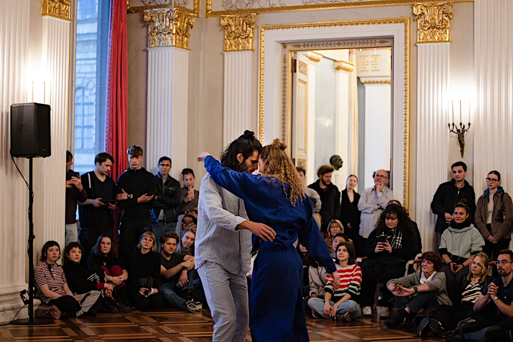
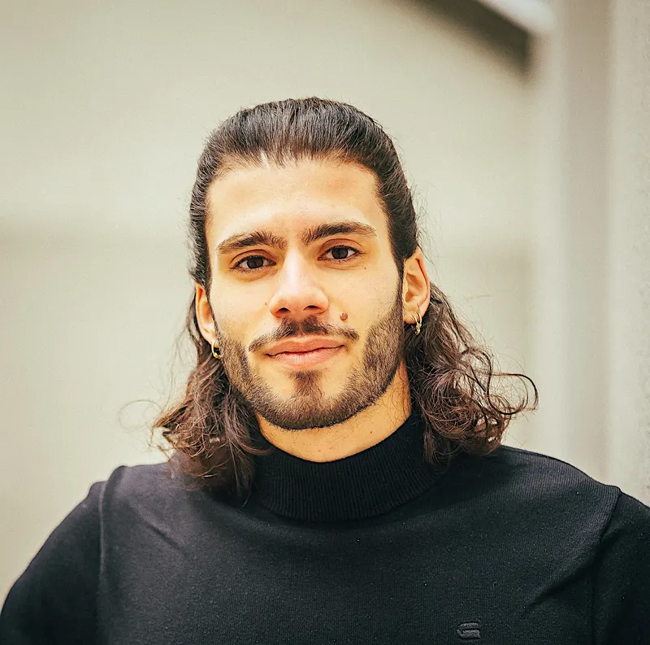

Für wen
Sportler:innen, Tänzer:innen, aktive Menschen

Neurozentriertes Training · München & online
Wir finden gemeinsam heraus, wie Gehirn und Körper bei dir zusammenspielen, und setzen dein Training genau dort an. Für Sportler:innen, Tänzer:innen und alle, die mit mehr vom Gleichen nicht weiterkommen.
Die Idee
Viele Trainingspläne starten mit dem, was bei den meisten funktioniert. Wir starten mit dir und schauen uns zuerst an, wie gut deine Augen, dein Gleichgewicht und deine Körperwahrnehmung gerade zusammenarbeiten.
Aus diesem Bild entscheiden wir, was du trainierst, und nicht aus einem Standardprogramm.
Wenn wir wissen, warum etwas nicht klappt, müssen wir nicht mehr raten.
So arbeiten wir →Wohin deine Augen schauen und wie ruhig sie dabei bleiben, spielt bei Gleichgewicht und Koordination mit.
Das Gleichgewichtsorgan im Innenohr sagt deinem Gehirn bei jedem Richtungswechsel, jedem Sprung und jeder Drehung, wo oben und unten ist.
Wie genau dein Gehirn weiß, wo deine Gelenke gerade sind, prägt, wie sauber eine Bewegung wird.
Wie du atmest, beeinflusst, wie angespannt oder ruhig du in eine Bewegung gehst.
Der Aufschlag, der im Training sitzt und im Match nicht, oder die Bewegung, die nur zu einer Seite klappt: Wenn du trotz Training nicht weiterkommst, liegt es vielleicht nicht an der Technik, sondern am Fundament darunter.
Du möchtest dich im Training und im Alltag wieder freier bewegen und suchst jemanden, der sich das Ganze in Ruhe anschaut. Dafür musst du nichts abbrechen, was du gerade machst.
Mit Screenings und neurozentrierten Einheiten ergänzen wir euer Athletiktraining. Der einfachste Einstieg ist eine Probeeinheit.
Bevor wir starten, klärst du mit deiner Ärztin oder deinem Arzt ab, ob Training für dich passt, und bringst gern mit, was du an Befunden hast. Wir sind Trainer und keine Ärzte, deshalb gehört dieser Schritt für uns fest dazu.
In der ersten Session testen wir, wie Sehen, Gleichgewicht, Körperwahrnehmung und Bewegung bei dir zusammenspielen. Die Tests sind kurz, und du bekommst sofort Feedback.
Du bekommst Übungen, die zu deinem Ziel passen und dich fordern, ohne dich zu überfordern. Dabei prüfen wir immer wieder, was dich weiterbringt und was nicht.
Stimmen
„Stamatis' calm, professional and supportive way of working makes you feel seen and supported."
U. S.
Der einfachste Weg, diese Art zu trainieren kennenzulernen: ein Workshop in der Gruppe.
Praktische Werkzeuge für Bewegung und Körperwahrnehmung, ohne Vorwissen.
Termine →Screenings, Einheiten und Vorträge für Sportteams und Ensembles.
Mehr →Workshops zu Fokus, Stress und Konzentration für Teams im Büro.
Mehr →

B.Sc. Sportwissenschaft · Zertifizierter Neuroathletiktrainer (Z-Health)
Sportwissenschaftler · Trainer · Tänzer
Ich bin ein Mover und in fast jeder Bewegungsform zu Hause, ob beim Tennis, im Triathlon, bei Calisthenics oder beim Tanzen. Irgendwann hat mich gestört, wie oft Trainingspläne auf Vermutungen aufbauen.
Über die Feldenkrais-Methode bin ich zur Frage gekommen, wie Gehirn und Bewegung zusammenhängen. Nach meinem Bachelor of Science in Sportwissenschaft habe ich mich bei Z-Health zum Neuroathletiktrainer zertifizieren lassen.
Heute trainiere ich mit synapse2move Sportler:innen, Tänzer:innen, aktive Menschen und Teams in München. Mit meiner Partnerin leite ich außerdem eine kleine Tanzschule für Brazilian Zouk, denn Tanzen ist für mich eine der schönsten Arten, Körper und Gehirn zu fordern.
Z-Health Trainersuche →Dein Start
In zwei Sessions schauen wir genau hin und geben dir deine ersten Übungen mit. Danach weißt du, ob diese Art zu trainieren zu dir passt, ganz gleich ob vor Ort in München oder online.
Erste Session für 50 € anfragenDu wählst einen Wunschtermin, wir prüfen den Raum und bestätigen dir so schnell wie möglich. Ist der Raum schon belegt, schlagen wir dir einen anderen Termin vor.
Noch unsicher?
In 20 kostenlosen Minuten online sprechen wir über dein Ziel, darüber, wie wir arbeiten, und ob wir zusammenpassen.
Erst kurz sprechen